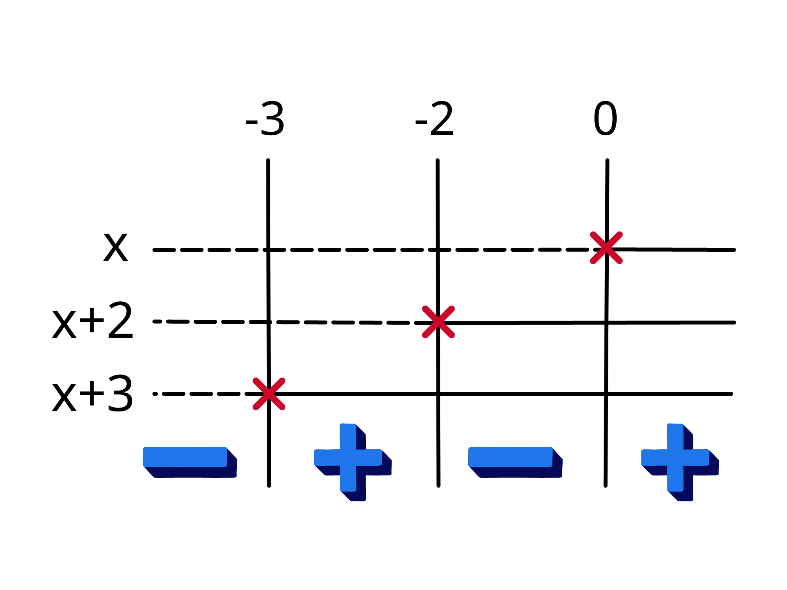
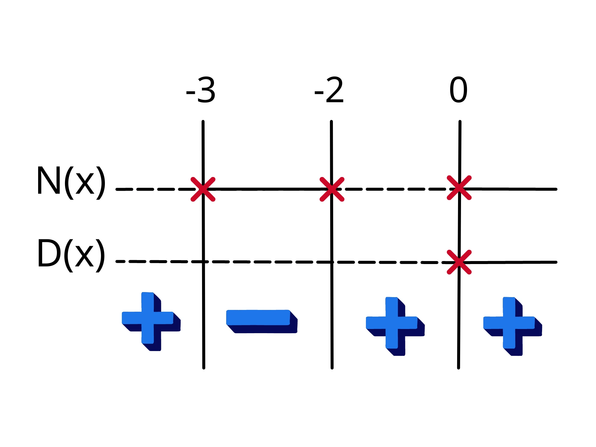

Le disequazioni fratte sono disequazioni con incognite al denominatore. Di conseguenza queste sono disequazioni del tipo:
\(\frac{N(x)}{D(x)}>0\)
o con \(<, \geq, \neq\) al posto di \(>.\)
Esempi di disequazioni fratte sono:
Non sono invece disequazioni fratte le seguenti:
Per risolverle dobbiamo saper fare solo due cose:
Dobbiamo saper fattorizzare perché studiare il segno di un polinomio di quarto grado, per esempio, è piuttosto complicato (tranne che per qualche caso particolare) ed è molto più semplice fattorizzarlo in \(4\) polinomi di primo grado, studiarli singolarmente e poi studiare il segno del prodotto grazie al grafico dei segni.
Per rendere i calcoli più ordinati solitamente si studia prima il numeratore da solo, poi il denominatore e solo infine si mettono insieme.
Facciamo un esempio per chiarezza:
Prendiamo la seguente disequazione fratta:
\(\frac{{x}^{3}+5{x}^{2}+6x}{2x}>0\)
Come abbiamo detto prima, iniziamo dal numeratore:
Abbiamo un polinomio di terzo grado e non sappiamo come studiare il suo segno. Possiamo però fattorizzarlo.
Notiamo infatti che:
\({x}^{3}+5{x}^{2}+6x=x({x}^{2}+5x+6)\)
Inoltre \({x}^{2}+5x+6\) è un trinomio speciale che possiamo riscrivere come:
\((x+2) \cdot (x+3)\)
Quindi abbiamo fattorizzato \({x}^{3}+5{x}^{2}+6x\) in \(x \cdot (x+2) \cdot (x+3)\)
Ora studiamo il segno dei singoli fattori:
Possiamo quindi tracciare il grafico dei segni:
Grazie al grafico sappiamo che quando \(-3< x < -2\) oppure \(0 < x\) allora \(N(x)>0 \)
Dobbiamo ora studiare il segno del denominatore:
In questo caso è piuttosto semplice perché avremo:
\(D(x)>0 \longrightarrow 2x>0 \longrightarrow x>0\)
Quindi quando \(x>0, D(x)>0.\)
Ora possiamo unirli con un nuovo grafico dei segni. Dobbiamo però stare attenti ad escludere i valori per i quali \(D(x)=0\) perché non si può dividere per \(0\).
sono varie notazioni per indicare che si escludono dei punti nel grafico dei segni. Noi metteremo una \(x\) sui punti di escludere. In ogni caso, il grafico è il seguente:
Ricordiamoci che stavamo cercando per quale valore di \(x\) la nostra frazione sarà positiva, quindi le nostre soluzioni saranno:
\(x <-3\) o \( -2< x<0\) o \(x>0. \)
Notare che non si possono unire i due ultimi intervalli perché avevamo escluso \(0.\)
Quindi, ricapitolando, dobbiamo soltanto studiare singolarmente il segno del denominatore e del denominatore singolarmente.
Per semplificare questo passaggio conviene spesso fattorizzare. Tutto qua.
Talvolta le frazioni potranno essere un po’ più complicate, ma si tratterà soltanto di fare qualche calcolo in più, il processo è lo stesso.